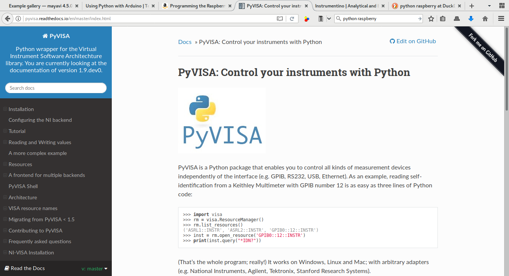

Clase 0: Introducción al lenguaje Python orientado a Ingenierías y Física
Autor: Juan Fiol
Licencia:
Esta obra está bajo una Licencia Creative Commons
Atribución-CompartirIgual 4.0
Internacional.

Python y su uso en ingenierías y ciencias
El objetivo de este curso es realizar una introducción al lenguaje de programación Python para su uso en el trabajo científico y técnico/tecnológico. Si bien este curso “en el final finaliza y empieza por adelante” vamos a tratar algunos de los temas más básicos sólo brevemente. Es recomendable que se haya realizado anteriormente un curso de Introducción a la programación, y tener un mínimo de conocimientos y experiencia en programación.
¿Qué es y por qué queremos aprender/utilizar Python?
El lenguaje de progamación Python fue creado al principio de los 90’ por Guido van Rossum, con la intención de ser un lenguaje de alto nivel, con una sintaxis clara, limpia y que intenta ser muy legible. Es un lenguaje de propósito general por lo que puede utilizarse en un amplio rango de aplicaciones.
Desde sus comienzos ha evolucionado y se ha creado una gran comunidad de desarrolladores y usuarios, con especializaciones en muchas áreas. En la actualidad existen grandes comunidades en aplicaciones tan disímiles como desarrollo web, interfaces gráficas (GUI), distintas ramas de la ciencia tales cómo física, astronomía, biología, ciencias de la computación. También se encuentran muchas aplicaciones en ciencia de datos, estadística, economía y análisis de finanzas en la bolsa, en interacción con bases de datos, y en el procesamiento de gran número de datos como se encuentran en astronomía, biología, meteorología, etc.
En particular, Python encuentra un nicho de aplicación muy importante en varios aspectos muy distintos del trabajo de ingeniería, científico, o técnico. Por ejemplo, es una lenguaje muy poderoso para analizar y graficar datos experimentales, incluso cuando se requiere procesar un número muy alto de datos. Presenta muchas facilidades para cálculo numérico, se puede conjugar de forma relativamente sencilla con otros lenguajes más tradicionales (Fortran, C, C++), e incluso se puede usar como “marco de trabajo”, para crear una interfaz consistente y simple de usar en un conjunto de programas ya existentes.
Python es un lenguaje interpretado, como Matlab o IDL, por lo que no necesita ser compilado. Esta característica trae aparejadas ventajas y desventajas. La mayor desventaja es que para algunas aplicaciones –como por ejemplo cálculo numérico intensivo– puede ser considerablemente más lento que los lenguajes tradicionales. Esta puede ser una desventaja tan importante que simplemente nos inhabilite para utilizar este lenguaje y tendremos que recurrir (volver) a lenguajes compilados. Sin embargo, existen alternativas que, en muchos casos permiten superar esta deficiencia.
Por otro lado existen varias ventajas relacionadas con el desarrollo y ejecución de los programas. En primer lugar, el flujo de trabajo: Escribir-ejecutar-modificar-ejecutar-modificar-ejecutar-modificar-ejecutar- … es más ágil. Alternativamente, se puede utilizar en forma interactiva, lo que permite modificar y ejecutar líneas específicas de un programa hasta obtener la versión correcta.
Es un lenguaje pensado para mantener una gran modularidad, que permite reusar el código con gran simpleza. Otra ventaja de Python es que trae incluida una biblioteca con utilidades y extensiones para una gran variedad de aplicaciones que son parte integral del lenguaje. Además, debido a su creciente popularidad, existe una multiplicidad de bibliotecas adicionales especializadas en áreas específicas. Por esta razones el tiempo de desarrollo: desde la idea original hasta una versión que funciona correctamente puede ser mucho menor que en otros lenguajes.
A modo de ejemplo veamos un gráfico, que hizo Juan Nunez-Iglesias basado en código de T. P. Robitaille y actualizado por C. Beaumont, correspondiente a la evolución hasta 2016 del uso de Python comparado con otros lenguajes/entornos en el ámbito de la Astronomía.
El uso de Python en comparación con otros lenguajes científicos de alto nivel creció rápidamente durante los últimos años.
Un último punto que no puede dejar de mencionarse es que Python es libre (y gratis). Esto significa que cada versión nueva puede simplemente descargarse e instalarse sin limitaciones, sin licencias. Además, al estar disponible el código fuente uno podría modificar el lenguaje –una situación que no es muy probable que ocurra– o podría mirar cómo está implementada alguna función –un escenario bastante más probable– para copiar (o tomar inspiración en) alguna funcionalidad que necesitamos en nuestro código.
Visita y excursión a aplicaciones de Python
Graficación científica en 2D
La biblioteca matplotlib es una de las mejores opciones para hacer gráficos en 2D, con algunas posibilidades para graficación 3D.

El mejor lugar para un acercamiento es posiblemente la Galería de matplotlib
El último ejemplo está creado utilizando seaborn, un paquete para visualización estadística (tomado de Scipy Lecture Notes)
Graficación en 3D
Matplotlib tiene capacidades para realizar algunos gráficos en 3D, si no son demasiado complejos. Para realizar gráficos de mayor complejidad, una de las más convenientes y populares bibliotecas/entornos es Mayavi:

Programación de dispositivos e instrumentos
Python ha ido agregando capacidades para la programación de instrumentos (osciloscopios, tarjetas, …), dispositivos móbiles, y otros tipos de hardware. Si bien el desarrollo no es tan maduro como el de otras bibliotecas.
Otras aplicaciones
Desarrollo web (Django, Cheetah3, Nikola, …)
Python embebido en otros programas:
Diseño CAD (Freecad, …)
Diseño gráfico (Blender, Gimp, …l)
Aplicaciones científicas
Vamos a aprender a programar en Python, y a utilizar un conjunto de bibliotecas creadas para uso científico y técnico:
En este curso vamos a trabajar principalmente con Ipython y Jupyter, y los paquetes científicos Numpy, Scipy y Matplotlib.
Herramientas
Bibliografía
Se ha logrado constituir una gran comunidad en torno a Python, y en particular en torno a las aplicaciones científicas, por lo que existe mucha información disponible. En la preparación de estas clases se leyó, inspiró, copió, adaptó material de las siguientes fuentes:
Accesible en línea
El Tutorial de Python, también en español
Documentación de Matplotlib, en particular la Galería
El curso de Python científico
Las clases de Scipy Scipy Lectures
Libros
The Python Standard Library by Example de Doug Hellman, Addison-Wesley, 2017
Python Cookbook de David Beazley, Brian K. Jones, O’Reilly Pub., 2013.
Elegant Scipy de Harriet Dashnow, Stéfan van der Walt, Juan Nunez-Iglesias, O’Reilly Pub., 2017.
Scientific Computing with Python 3 de Claus Führer, Jan Erik Solem, Olivier Verdier, Packt Pub., 2016.
Interactive Applications Using Matplotlib de Benjamin V Root, Packt Pub., 2015.
Mastering Python Regular Expressions de Félix López, Víctor Romero, Packt Pub., 2014,
Otras referencias de interés
Otras bibliotecas útiles:
Blogs y otras publicaciones